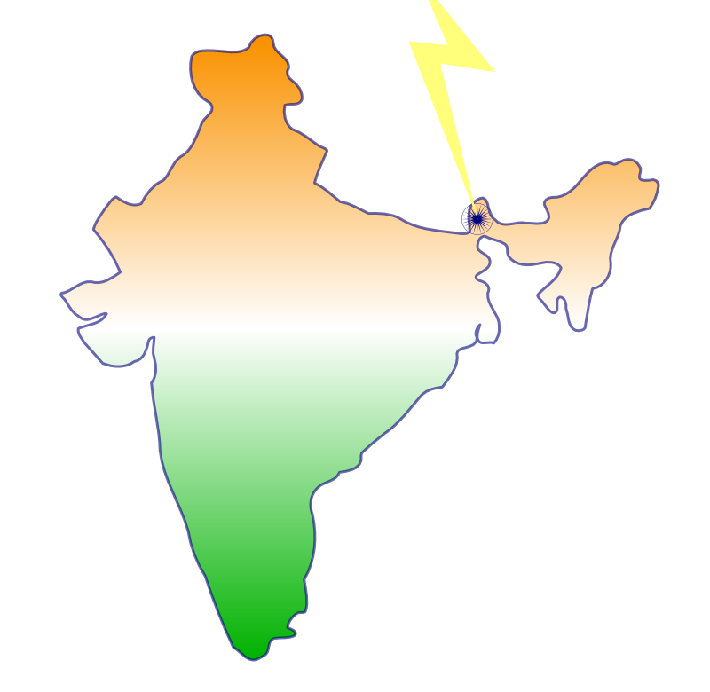

Introduction
As most people know, this scenic place blessed with it's natural beauty, is home to world famous Darjeeling tea and the Darjeeling
Himalayan Railway- A world heritage. Darjeeling also has the largest orchid species, for example Cypripedium, Dendrobidium,
Cybidium and so on. Although Darjeeling is a small city, it has the third tallest mountain in the world,Mount Kanchenjunga.
it also has Tiger Hill so tall that you could get a glimpse over to Mount Everest.
Places to Visit
If you like climbing and beatiful views then Mount Kanchenjunga and Tiger Hill are the mountains for you! You get the best of
both worlds,the view,the excercise,and the beauty of it! Toy train coming from siliguri is liked by children and elders. Because of
the slow speed, you get to appreciate the scenery and capture stunning phtos.The Darjeeling Tourism Tea Festival is a great place for
tourists to go.You find out lots of interesting information about Darjeeling Tea, Darjeeling itself and a bit about India
Fast Facts
- Population: 132,016
- Languages: Bengali, Nepali, Hindi and English
- Religions: Hindu,Buddhist,Sikh,
- Known as: Lands of thunderbolt-dorje meaning thunderbolt in tibetan, ling- a place or land.
Queen of the Hills
- Festivals: The Teesta Tea and Darjeeling Tourism Festival
History
The Gurkha War
The Gorkha War also known as Anglo Nepal War broke out in 1814 and ended 1816, The fight took place in Nepal. It was a fight between the Kingdom of Nepal now called the Federal Democratic Republic Nepal against British East Company.
Fortunately for The British East Company had twenty-two thousand men as well as sixty guns. However,The Kingdom of Nepal had less than twelve thousand menand not as many resources. The British had more cannons and
guns.lots of cannonballs fired by British. Consequently, lots of the Nepalese army had been injured and killed.